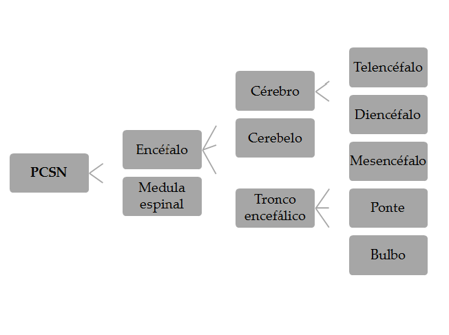
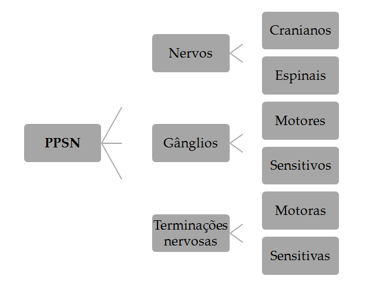
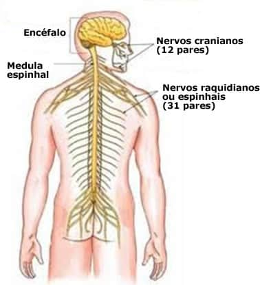
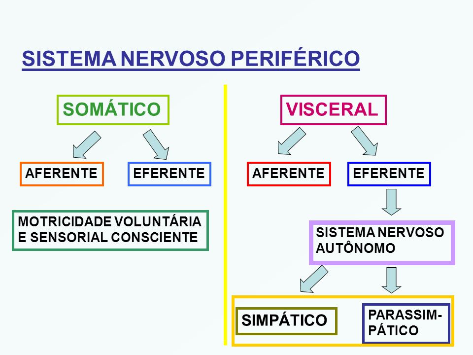
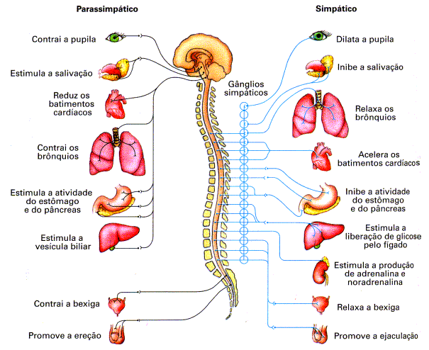
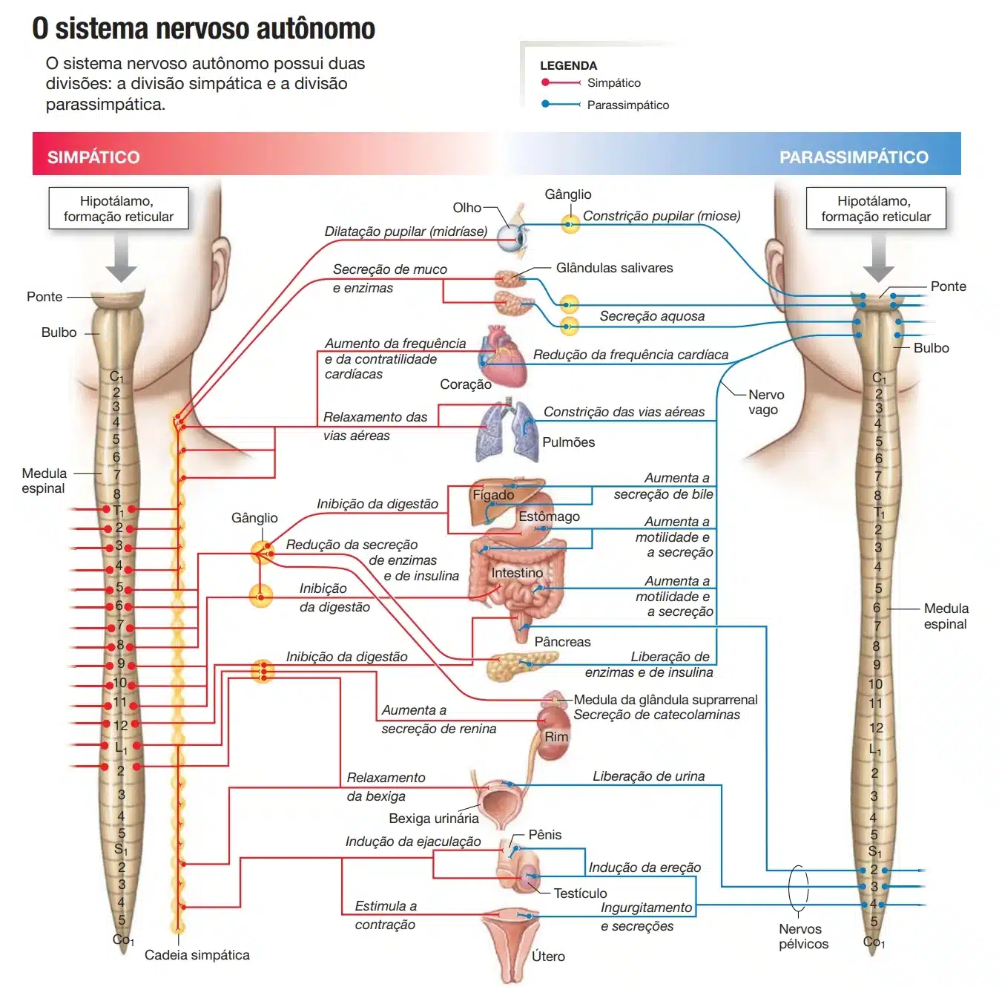
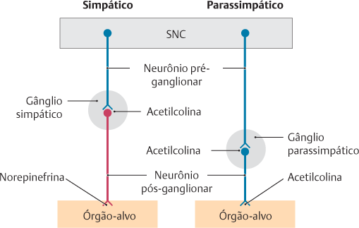
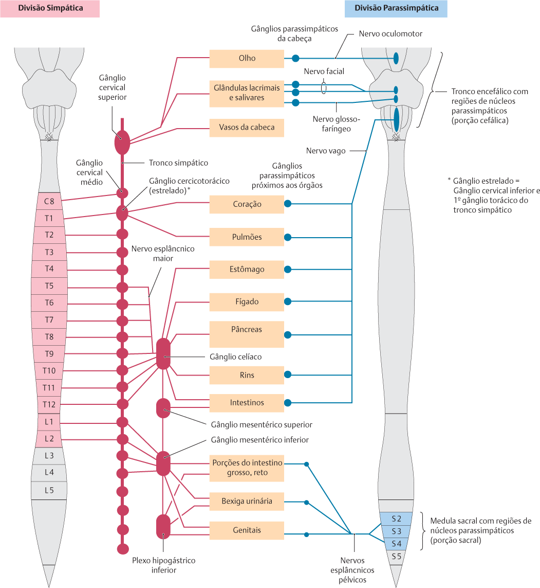
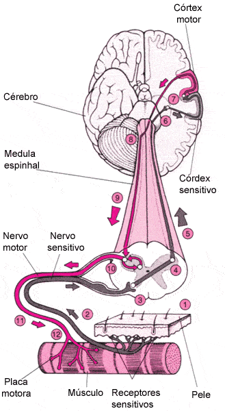

A divisão do sistema nervoso é puramente didática, visto que as partes estão intimamente relacionadas do ponto de vista morfofisiológico.
Existem critérios diferentes para dividir o sistema nervoso, que são:
Embriológicos, anatômicos e funcionais.
Para saber mais sobre a divisão embriológica do sistema nervoso clique aqui.
Anatomicamente o sistema nervoso é dividido em duas partes:
Central (parte central do sistema nervoso – PCSN) e periférica (parte periférica do sistema nervoso – PPSN).
Está alojada em um estojo ósseo (crânio e coluna vertebral), que lhe oferece proteção adequada.
Os órgãos da PCSN são o encéfalo (localizado na cavidade craniana), e a medula espinal (preenche parcialmente o canal vertebral).
O encéfalo e a medula espinal formam o neuro-eixo.
O encéfalo apresenta três partes: cérebro, cerebelo e o tronco encefálico.
O cérebro é constituído pelo telencéfalo e diencéfalo.
O tronco encefálico apresenta três constituintes: mesencéfalo, ponte e bulbo.



Utilizando o critério funcional, podemos dividir o sistema nervoso em duas partes:
somática e visceral.
Do grego – corpo: parte do sistema nervoso que relaciona o ser com o meio externo.
As alterações do ambiente estimulam a parte somática do sistema nervoso, que por uma cadeia de neurônios leva as informações até centros superiores (via aferente).
Após o processamento das informações, os centros superiores influenciam órgãos alvos (os músculos estriados esqueléticos – via eferente).
Controla a homeostase do organismo, integrando as funções das diversas vísceras do corpo.
Informações provenientes das vísceras são transmitidas aos centros superiores (via aferente).
Após o processamento das informações estímulos eferentes são levados para os músculos lisos, músculo estriado cardíaco ou glândulas (via eferente).
A estimulação eferente pode ser inibitória ou excitatória para aquela víscera.
Os estímulos eferentes são conduzidos pelas partes simpática ou parassimpática da divisão autônoma do sistema nervoso.
Na maior parte dos casos as partes simpática e parassimpática são antagonistas.
A inibição ou excitação do órgão dependerá da interação entre o neurotransmissor (liberado pelas partes simpática ou parassimpática) com o receptor de membrana (localizado na víscera alvo).

A parte autônoma do sistema nervoso coordena o controle visceral, mantendo a homeostase do organismo.
A via aferente informa os centros superiores das alterações que ocorrem nas vísceras, enquanto que a via eferente atua sobre elas (glândulas, músculo liso e músculo estriado cardíaco).
A via eferente da parte autônoma do sistema nervoso é composta por duas divisões:
simpática e parassimpática.
Geralmente, as divisões apresentam ações antagônicas nos órgãos alvos.
A resposta será excitatória ou inibitória dependendo do órgão (ou seja, a interação entre o neurotransmissor liberado e o receptor de membrana).
O centro de controle da parte autônoma do sistema nervoso está localizado no hipotálamo.
A parte posterior do hipotálamo controla a divisão simpática e, a parte anterior controla a divisão parassimpática.
Existem semelhanças anatômicas entre as vias das divisões simpática e parassimpática:
Ambas apresentam dois neurônios.
O primeiro neurônio está localizado na parte central do sistema nervoso.
O segundo neurônio forma o gânglio motor (autônomo).
A localização dos gânglios simpáticos e parasssimpáticos são diferentes (veja adiante).
Unindo os neurônios estão as fibras: pré-ganglionares (conecta o primeiro e o segundo neurônios), e as fibras pós-ganglionares (conecta o segundo neurônio como órgão alvo).

O primeiro neurônio da divisão simpática está localizado na coluna lateral da medula espinal (segmentos torácicos e lombares altos).
O segundo neurônio da divisão simpática forma os gânglios paravertebrais e pré-vertebrais.
Os gânglios paravertebrais se estendem ao longo da coluna vertebral, ao lado do corpo da vértebra.
Os gânglios pré-vertebrais se localizam na origem dos principais troncos arteriais abdominais.
As fibras pré-ganglionares simpáticas são curtas e mielinizadas.
As fibras pós-ganglionares são longas e amielínicas.
O neurotransmissor da fibra pré-ganglionar é a acetilcolina (constitue o sistema de neurotransmissão colinérgica), enquanto que na fibra pós-ganglionar é a noradrenalina (constituem o sistema de neurotransmissão adrenérgica).
As fibras pré-ganglionares, originadas na coluna lateral da medula, alcançam a raiz anterior dos nervos espinais.
Desta forma, os nervos espinais se comunicam com a cadeia ganglionar simpática, por meio dos ramos comunicantes brancos e cinzentos.
O ramo comunicante branco é constituído por fibras pré-ganglionares, e os ramos comunicantes cinzentos pelas fibras pós-ganglionares.


O primeiro neurônio da divisão parassimpática está localizado no tronco encefálico (núcleos dos nervos: oculomotor, facial, glossofaríngeo e vago) e na parte sacral da medula espinal.
O segundo neurônio da divisão parassimpática forma os gânglios localizados próximos ou nas paredes das vísceras.
No trato gastrintestinal os gânglios formam os plexos parassimpáticos submucoso e mioentérico.
As fibras pré-ganglionares parassimpáticas são longas e mielinizadas.
As fibras pós-ganglionares são curtas e amielínicas.
O neurotransmissor das fibras pré e pós-ganglionares é a acetilcolina.
As fibras pré-ganglionares, originadas na coluna lateral da medula, alcançam a raiz anterior dos nervos espinais.
Desta forma, os nervos espinais se comunicam com a cadeia ganglionar simpática, por meio dos ramos comunicantes brancos e cinzentos.
O ramo comunicante branco é constituído por fibras pré-ganglionares, e os ramos comunicantes cinzentos pelas fibras pós-ganglionares.

Pode-se dividir o sistema nervoso em sistema nervoso segmentar e sistema nervoso supra-segmentar.
A segmentação no sistema nervoso é evidenciada pela conexão com os nervos.
Pertence a ele todo o sistema nervoso periférico, mais aquelas partes do sistema nervoso central que estão em relação direta com os nervos típicos, ou seja, a medula espinhal e o tronco encefálico.
O cérebro e o cerebelo pertencem ao sistema nervoso supra-segmentar.
Assim, nos órgãos do sistema nervoso supra-segmentar, a substância cinzenta localiza-se por fora da substância branca
e forma uma camada fina, o córtex, que reveste toda a superfície do órgão.

Já nos órgãos do sistema nervoso segmentar não existe córtex, e a substância cinzenta pode localizar-se por dentro da branca, como ocorre na medula.
O sistema nervoso segmentar surgiu na evolução antes do supra-segmentar e, funcionalmente, pode-se dizer que lhe é subordinado.
Assim, de um modo geral, as comunicações entre o sistema nervoso supra-segmentar e os órgãos periféricos, receptores e efetuadores, se fazem através do sistema nervoso segmentar.